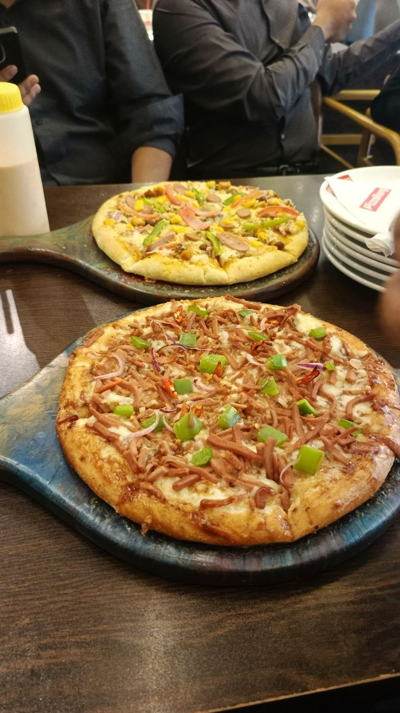
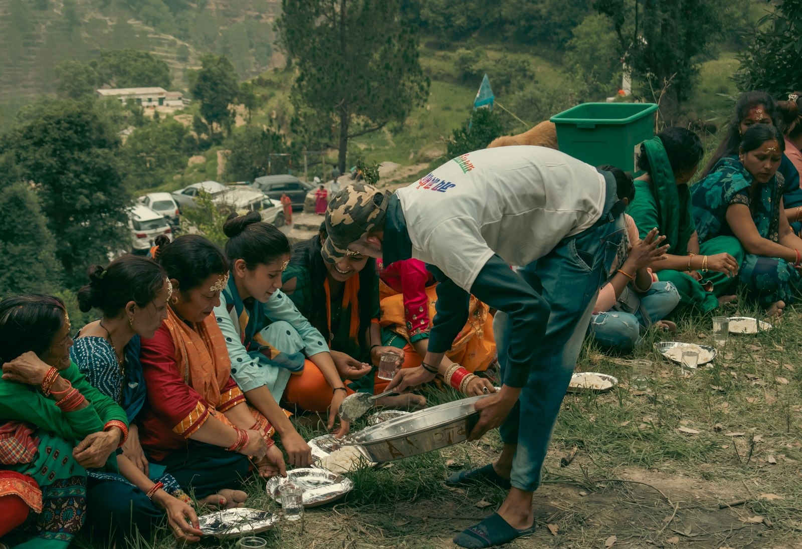

A Business Ethics case review — Group NEXIX, Bangladesh University
PizzaBurg has provided pizzas to mosques for iftar, reported by Dhaka Tribune.
Employees dress as Santa Claus and distribute free pizzas to disadvantaged children, reported by Dhaka Tribune.

100% biodegradable packaging, with a box return/recycling incentive.
| Initiative | Cost | Primary Benefit | Priority |
|---|---|---|---|
| Buy 1, Give 1 | Self-funding, scales with sales | Converts seasonal goodwill into an always-on program | HIGH |
| Green PizzaBurg | Moderate upfront | Youth-market appeal; ahead of tightening plastic regulation | MEDIUM |
| Student Support | Low, scalable | Builds a talent pipeline and employer branding | MEDIUM |
| Food Rescue | Near-zero | Reduces disposal cost; strong reputational story | HIGH |
4 initiatives · near-zero to moderate cost · compounding brand + community return